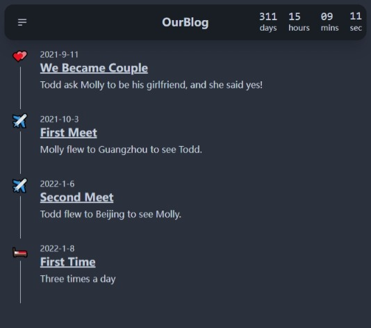
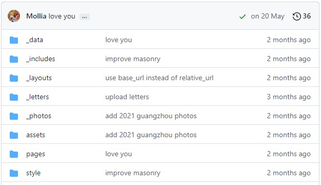
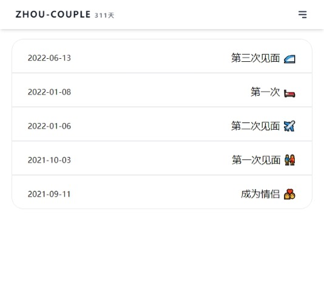
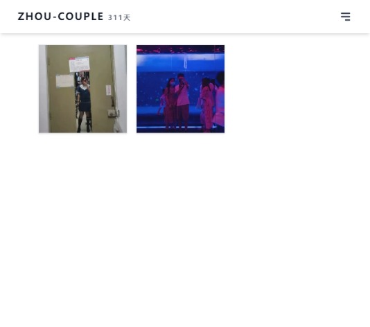
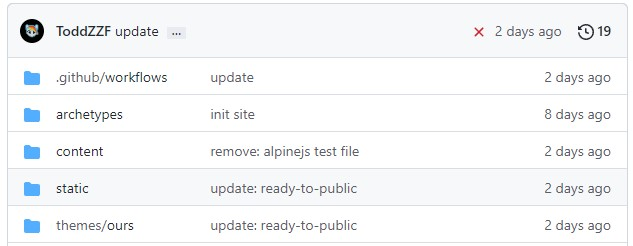

Zhou-Couple with Hugo
the next version of our blog
our blog的第一个版本
|  |  |
|
|  | ||
our blog的第二个版本
|  |  | |
|  | ||
对比
| OurBlog-v1 | OurBlog-v2 | |
| 界面美观 | OK | Better |
| 动画效果 | None | Fluent |
| 文件组织 | Messy | Tidy |
| 配置使用 | Complex | Simple |
| 功能 | Limited | Advanced |
多亏了新的博客生成器：Hugo
- 使用简单：只需要下载一个 50M 的程序，无需安装
- 运行迅速：生成网页只需不到1s，可以本地预览
- 功能强大：具有图片处理等功能
推荐配合 VS Code 使用
VS code 是一个跨平台的代码编辑器，其安装包大小与 Typora 差不多，配合上 Markdown-editor 插件使用起来与 Typora 一样。关键它还是免费的！（Typora 现在要收费才能用）
VS code 还可以用于开发网页，如果希望能参与到网站开发中，那就更需要使用 VS code 了。